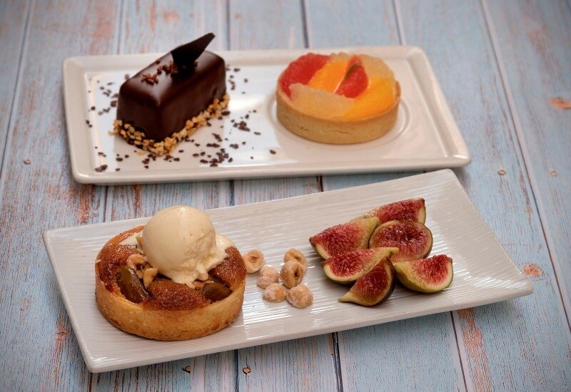
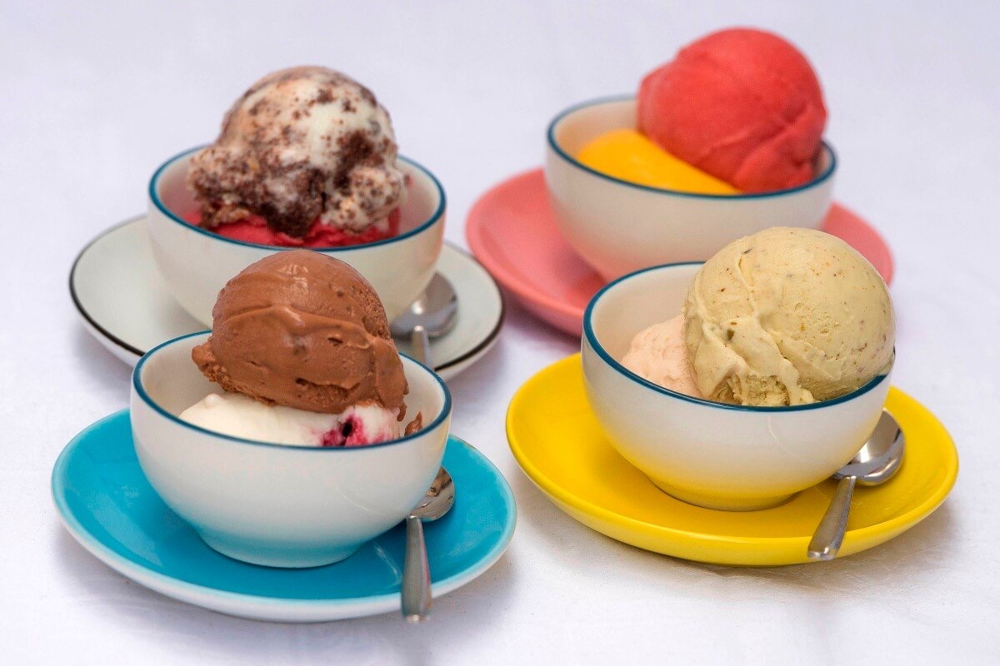
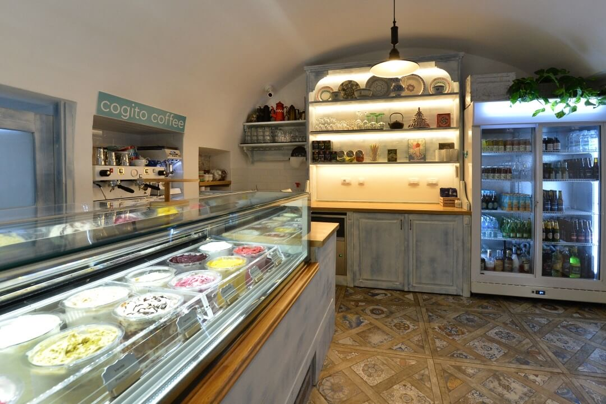
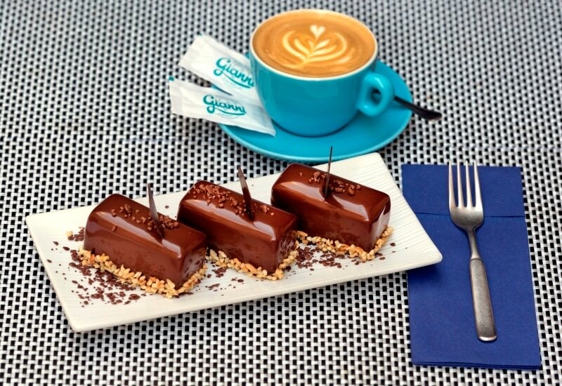
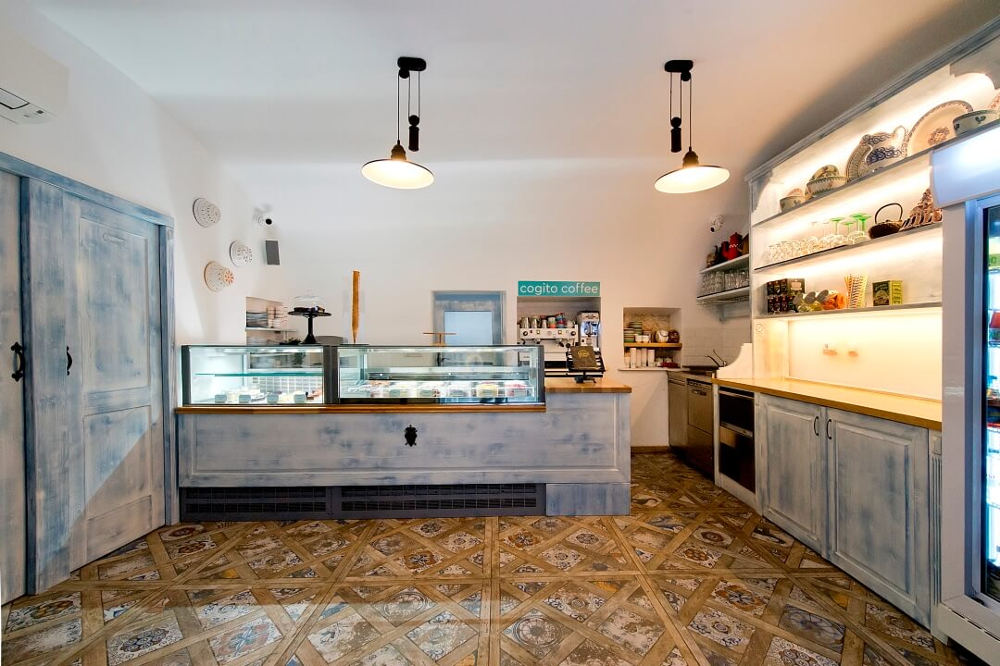
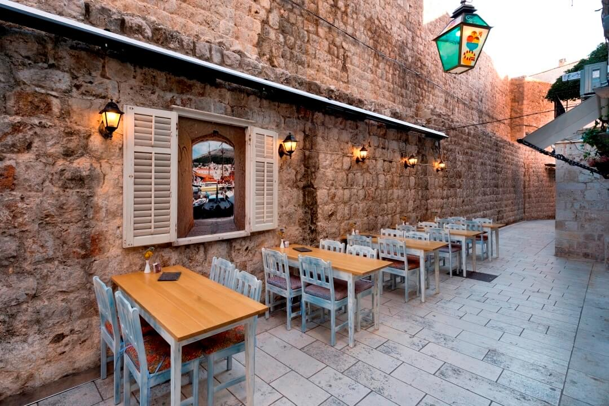
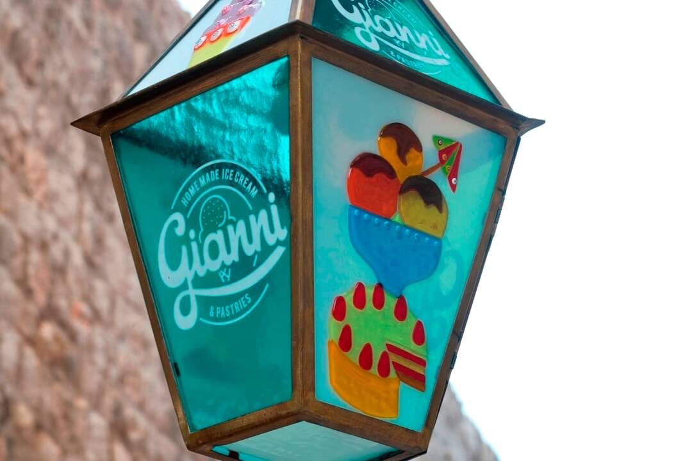

Sladoled, slastice i dobra kava.
Sve pripremamo od početka, svaki dan i ručno. Ponuda se mijenja jer stalno uvodimo nove okuse i recepte.



Dvanaest okusa sladoleda i sorbeta.
Posjetite nas i počastite se s 12 okusa sladoleda i neobičnih sorbeta. Sladoled radimo od mlijeka, vrhnja, Valrhona čokolade, vanilije s Madagaskara i sezonskog voća.
- Ručno rađen, svaki dan svjež
- Veganski sladoledi
- Sladoledi bez glutena
- Novi okusi stižu stalno, pa se vitrina mijenja

Dubrovačka tradicija i francuski stil.
Jednostavno volimo raditi kremaste, ukusne deserte koji zasite i razvesele. Kod nas možete kušati tradicionalne dubrovačke kolače i kolače i specijalitete na francuski način.
- Tradicionalni dubrovački kolači
- Kolači i specijaliteti na francuski način
- Veganska verzija i verzija bez glutena
Što je danas u vitrini, najlakše je provjeriti telefonom na 095 3926 323.


Kava kakvu volite, uz hrskavi kroasan.
Svaka šalica kave ima nešto posebno, a mi ćemo je pripremiti baš kako je volite: blagu ili jaku. Uz nju hrskavi kroasan ili svježi bagel.
- Premium kava Cogito
- Kroasani i svježi bageli


Vitamini za zdrav doručak.
Nudimo svježe cijeđene sokove i prirodne sokove s obiteljskih farmi, za dnevnu dozu vitamina. Idealno uz zdrav doručak na terasi.
Imate prijedlog okusa?
Pošaljite nam ga, zajedno s pitanjem ili posebnim zahtjevom. Rado ćemo vas čuti.